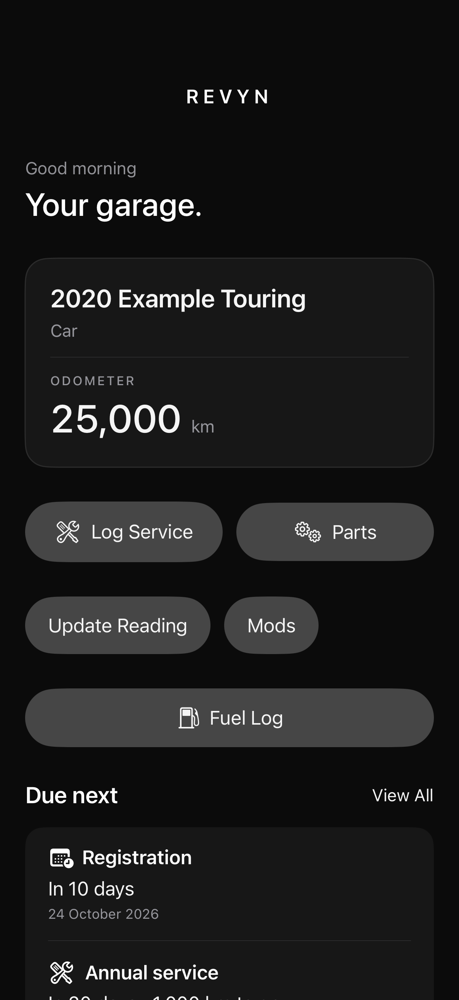

Your ownership journal
Everything about
your vehicles.
In one place.
A clear record of services, fuel, modifications and the paperwork that comes with owning a vehicle.
Get help with REVYN
Less remembering. More driving.
Know what’s due.
Set your own service intervals and registration dates. Home brings upcoming tasks together, with date alerts you can enable in Profile.
Keep the whole story.
Log services, fuel fills, parts and modifications. Keep receipts beside the vehicle and find past work in its timeline.
Your garage travels with you.
Save changes on your device, even offline. When iCloud is available, REVYN syncs your garage, photos and documents through your private iCloud storage.
Read how your data is handledSimple when you want it.
Switch between Simple and Advanced mode without losing history. Use kilometres, miles or engine hours to suit the vehicle.